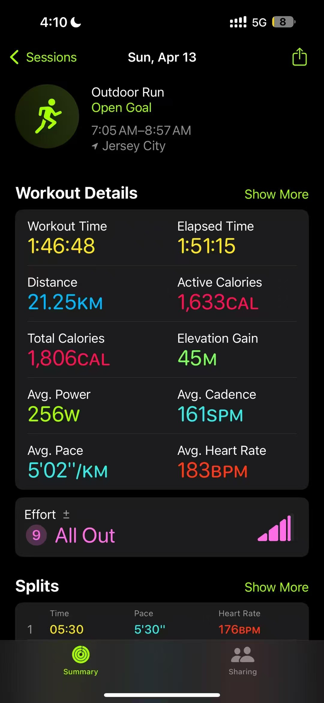
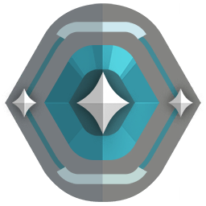
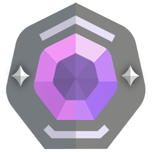

Rain Piao · Los Angeles
I’m a UCLA sophomore studying Statistics & Data Science and Applied Mathematics.
Right now, I’m working on computer vision research with BruinML and a poker decision model with ACM AI.
Outside class, I make music, act with CFan, and beatbox with SouLA.


01 / Education
Where I’m
learning.Education
University of California,
Los Angeles
B.S.Statistics and Data Science
B.S.Applied Mathematics
College Honors Program · Dean’s Honors List
Selected coursework
Regression Analysis, Experimental Design, Statistical Programming with R, Linear Algebra, Multivariable Calculus, Differential Equations, and C++.
Before UCLAThe Pennington School2022–2025
Work
Professional experience.
02 / Work
Selected work.Projects & research
Research
Computer vision & statistical detection

Software
Tools, models & systems
Turning sheet music into MIDI.PDF-to-MIDI Conversion — Pusheng
In development · recognition and evaluation
An ongoing PDF-to-MIDI project. I’m evaluating recognition engines and note-level errors before building the musician review interface.

Learning how a poker player decides.Poker Decision Modeling
An ACM AI team project modeling whether a poker player will fold, call, or raise from game state and earlier actions.

From point clouds to passing cars.LiDAR Traffic-Monitoring System
A C++ pipeline that groups LiDAR points into vehicles, tracks them across frames, and estimates traffic speed.
Competitions
Working with a team, against a deadline

Building a trading strategy.Algorithmic Trading Strategies
Python trading strategies with adaptive mean reversion and risk controls. Our team reached Round 3: top 16% of 18,803 teams.

A dataset, five people, 48 hours.Healthcare Data Analysis
I coordinated five people through a 48-hour patient-data analysis in R, ending with a five-minute presentation on cancer care.
03 / Toolkit
What I work with.Skills
Programming
- Python
- R
 C++
C++- Java
From analysis scripts to a frame-by-frame tracking pipeline.
- Algorithm design
- 3D breadth-first search
- Object tracking
Statistics & data
- NumPy
- pandas
- scikit-learn
- ggplot2
Analyzing data, checking relationships, and presenting findings.
- Regression analysis
- Experimental design
- Spearman correlation
- Data visualization
Computer vision & ML
Testing detection methods with frozen image features and simulation.
- CLIP patch features
- Out-of-distribution detection
- Monte Carlo simulation
- Spatial scans
- PyTorch
Development & publishing
- Git
- GitHub
 Linux
Linux- Jupyter
 LaTeX
LaTeX
Version control, notebooks, technical writing, and this buildless website.
- HTML & CSS
- JavaScript
- GitHub Pages
Mathematical foundations
04 / Music
There’s music here, too.
Two of my earlier tracks.
01 / Original track
Breath Away
Melodic Dubstep
Yufei Piao
- Tempo
- 73 BPM
- Key
- B♭ major / G minor
02 / Original track
Camelia Overdose
UK Hardcore
Yufei Piao
- Tempo
- 235 BPM
- Key
- C minor / E♭ major
05 / Outside class
The rest of the week.
Running
Jersey City Half Marathon
- Distance
- 21.25 km
- Workout time
- 1:46:48
- Avg. pace
- 5′02″ / km

My Apple Watch record ↗Chess
Blitz on Lichess. About 1,755 when I last updated this.
Lichess
VALORANT
- Current rank

Platinum 3- Peak rank

Diamond 2
Last updated October 2026
CFan Theatre
Stage credits · Fall 2025–Fall 2026
- 《井底天空》毕宁
- 《安可》Winter skitG
- 《墙》The WallNo. 7
- 《生死客》Fall playKline
Alongside acting, I worked on sound and wrote nine original cues for 《墙》. I also compose for 《生死客》.
CFan TheatreSouLA A Cappella
I’m on vocal percussion and tenor. I’ve also arranged for our media projects and worked on recording, mixing, and video.
SouLA